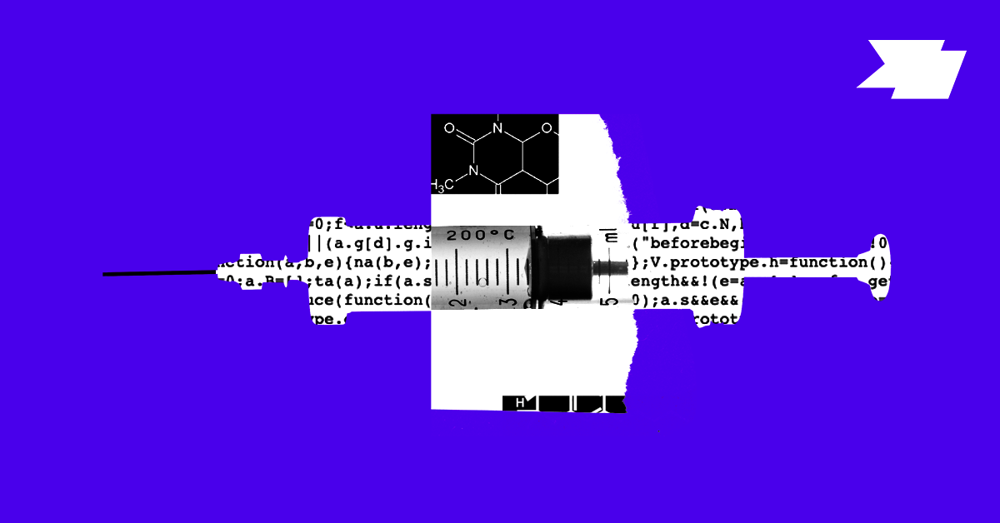

Scientists have long admitted that science has major structural flaws: the funding model is broken, findings often cannot be reproduced, and knowledge is trapped in silos. In recent years, a small yet enthusiastic set of technologists, scientists, and entrepreneurs has looked to web3 and blockchain tools as possible ways to unstick these structural bottlenecks. That has grown into the decentralized science (DeSci) movement, though it has advanced slowly while scientists have been slow to get involved.
In late 2021, Sarah Hamburg published a call to action for scientists in Nature, and it struck a chord. Leading scientists are starting to see the opening, including Eric Topol, who said decentralized blockchain technology could be central to building the smartphone apps we need to stop the next pandemic. As these communities have at last started to converge, DeSci has been building momentum in 2022.
With that, here is Future’s web3 x science coverage from this year to date, along with some of the key writing and events around the community. Since the DeSci movement is still in its early phase, we also include some coverage of web3 and decentralization that offer useful lessons and insights for the expanding community.
In Future:
A Primer on DeSci, the Newest Web3 Movement by Sarah Hamburg
A Primer on Decentralized Biotech by Jocelynn Pearl
Decentralization for Web3 Builders: Principles, Models, How by Miles Jennings
The Missing Link Between Web2 and Web3: Custody by Mahesh Vellanki
Around the Web:
What Is Decentralized Science? by Kay / CoinMarketCap
Decentralized Science – ResearchHub with Patrick Joyce, Anton Lebed / Smart Contract Research Forum Interviews
Cloud Labs: Where Robots Do the Research by Carrie Arnold / Nature
The State of Crypto Report 2022 by Darren Matsuoka, Eddy Lazzarin, Chris Dixon, and Robert Hackett / a16z crypto
When blockchain meets artificial intelligence: An application to cancer histopathology by Runyu Hong David Fenyö / Cell Reports Medicine
DeSci: Can crypto improve scientific research? by Max Parasol / CoinTelegraph
Phage Directory: How a Decentralized Network of Researchers Find Cures / with Jessica Sacher, Jan Zheng, and Jocelynn Pearl / UltraRare
Community Events:
ICYMI: DeSci. Berlin was held in May. Talks are online for day 1 and day 2.
Upcoming events: DeSci Community Calendar maintained by Ariella Coller-Reilly currently
Event to watch: DeSci Boston Hackathon sponsored by VitaDAO, Molecule and more, Sept 23-25, 2022